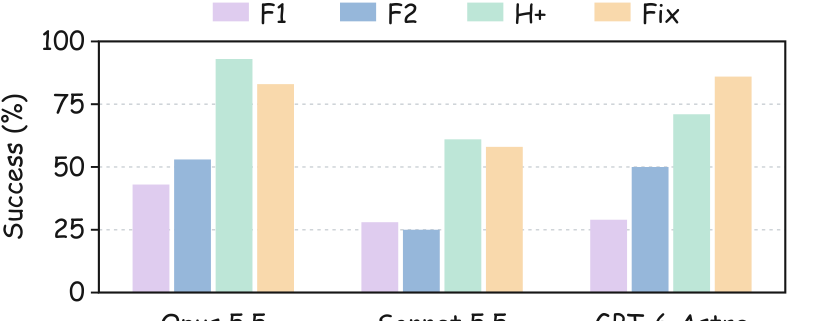

FINDING 1
Diagnosing the hidden cause is the main bottleneck for frontier models.
Fresh agents restart from the same failed first attempts with progressively richer feedback. Told only that they failed, agents repeat the same flawed choice. When GPT and Opus miss the cause, 51% blame motion slips and 33% treat the anomaly as part of the scene.
43% → 93%Opus 5.5 recovery when told the hidden cause
29% → 71%GPT-6 Astra
